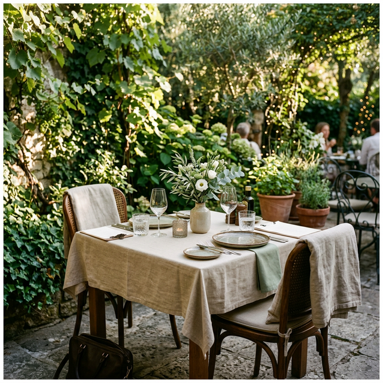
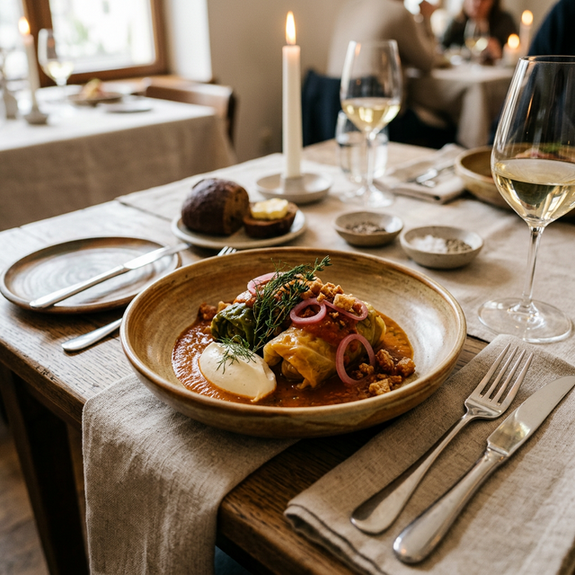
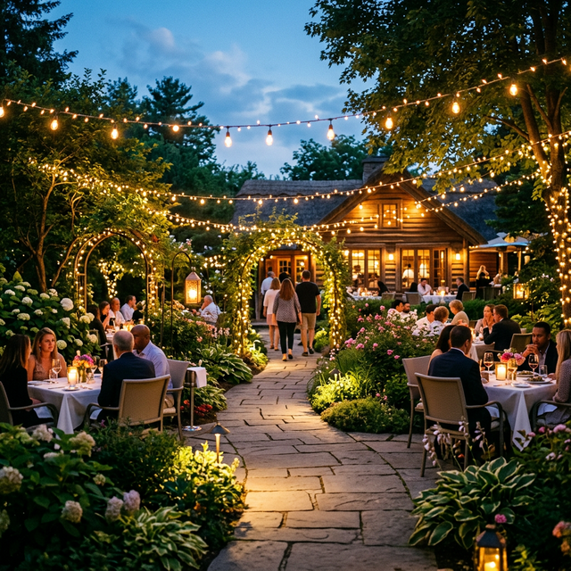
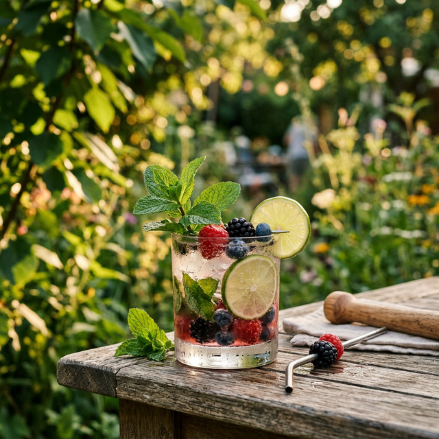

Descoperă Refugiul Tău în Inima Naturii
Bucură-te de preparate excepționale într-o atmosferă liniștită, pe terasa noastră plină de verdeață.
Povestea Noastră
La Grădina 11 iunie, credem că fiecare masă trebuie să fie o experiență de neuitat. Ascuns de zgomotul orașului, restaurantul nostru oferă o oază de liniște, unde natura se împletește armonios cu arta culinară.
Folosim doar cele mai proaspete ingrediente locale, pregătite cu pasiune de bucătarii noștri, pentru a-ți oferi o simfonie de gusturi într-un cadru de poveste.
Descoperă Locația
Galerie Foto


